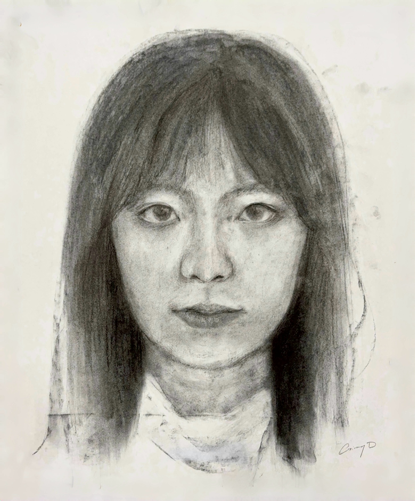
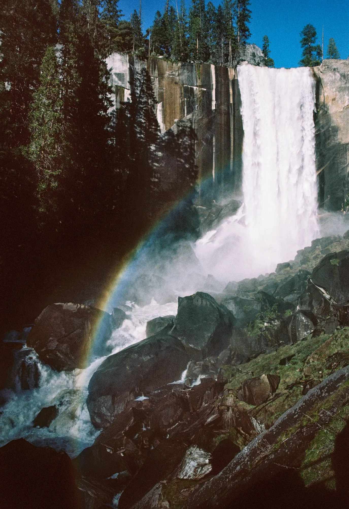
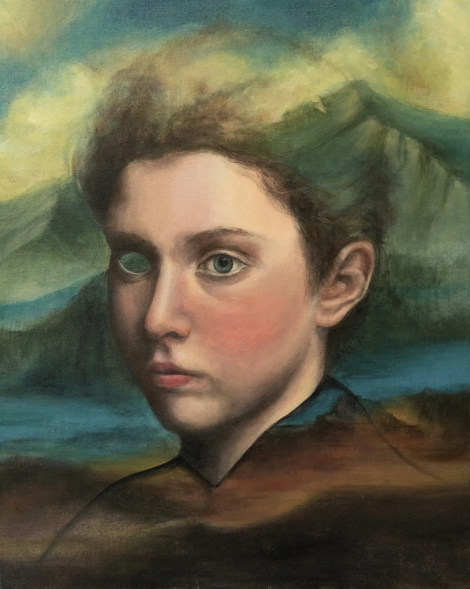
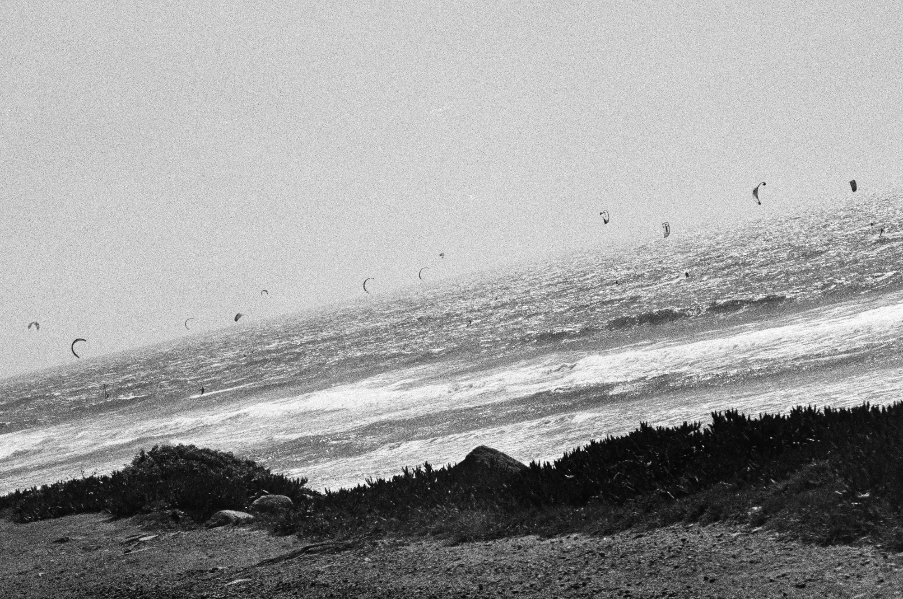
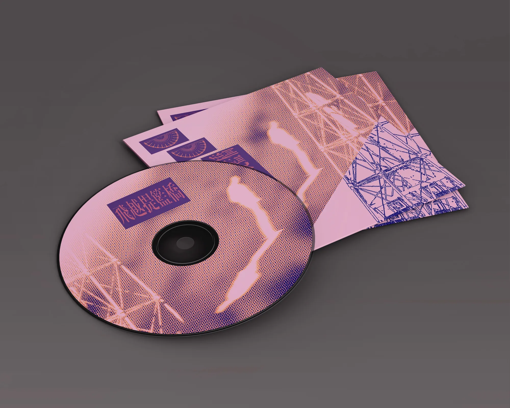
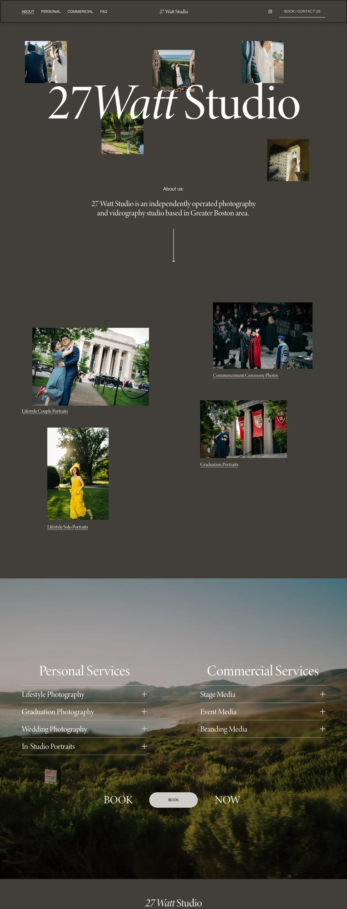
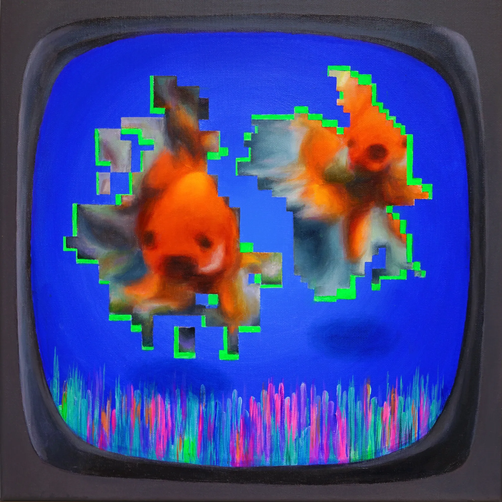

Ginny is a UX designer with a background in human factors psychology and visual arts. She studies how people think and decide, and turn that into interfaces that are clear and easy to trust.
When I'm not designing, I'm usually chasing light with my camera, planning my next trip, or playing guitar in a band with my friends. I like going to new places and trying new media in my art — each one turns a piece of my life into something I haven't experienced before.

Self portrait of Ginny, created in 2025

Colored Film Taken in San Francisco

Gaze

I am a very obsessed Stardew Valley player. While working on my own farm, I design and code my own mods when the game doesn't do what I want. Visit my nexus homepage: nexusmods.com/profile/jyxdong/mods

One, Pair, Crowd

Album Cover Design for my band’s song “Runaway”

27 Watt Studio is a photography studio founded by my friends and I. I work as an assistant photographer while mainly responsible for social media and web design.

In Glitch